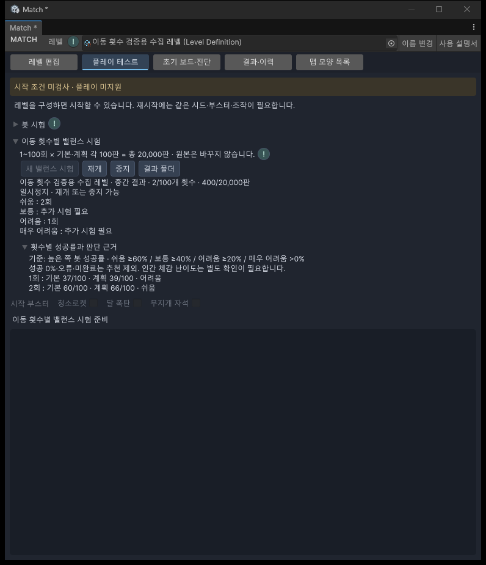
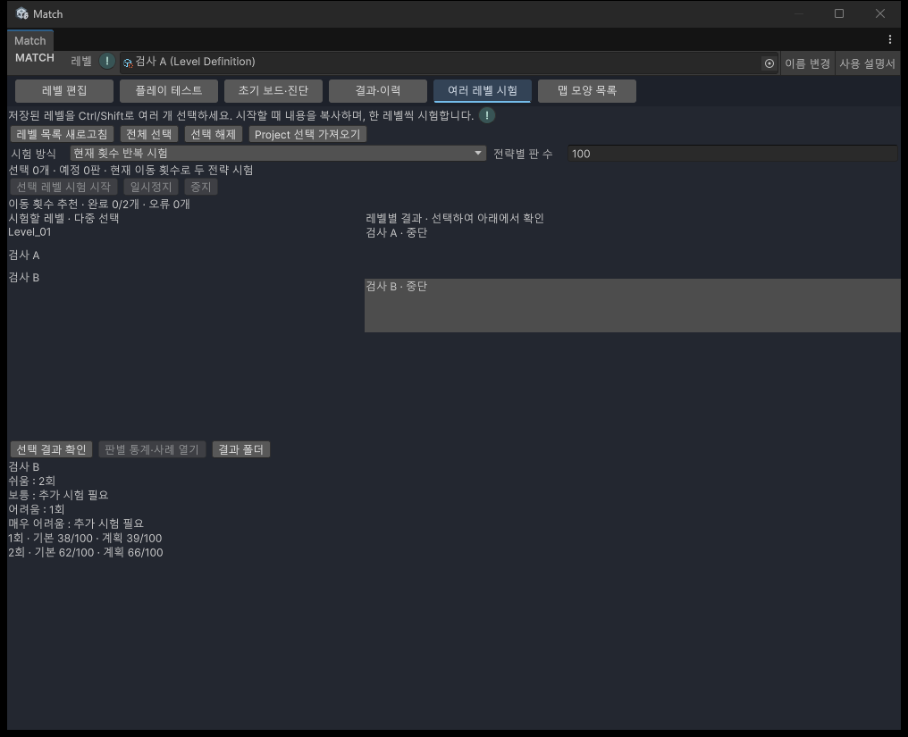
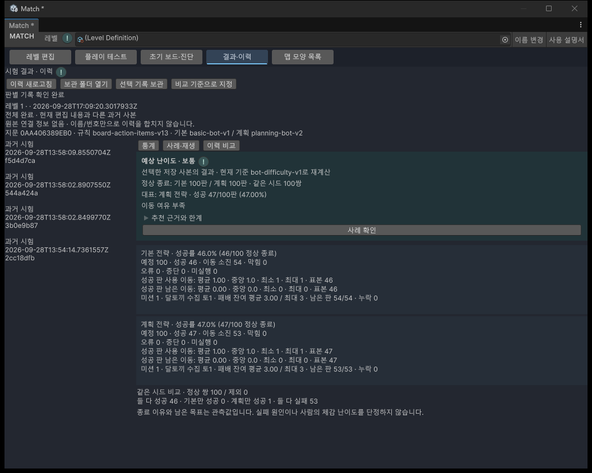
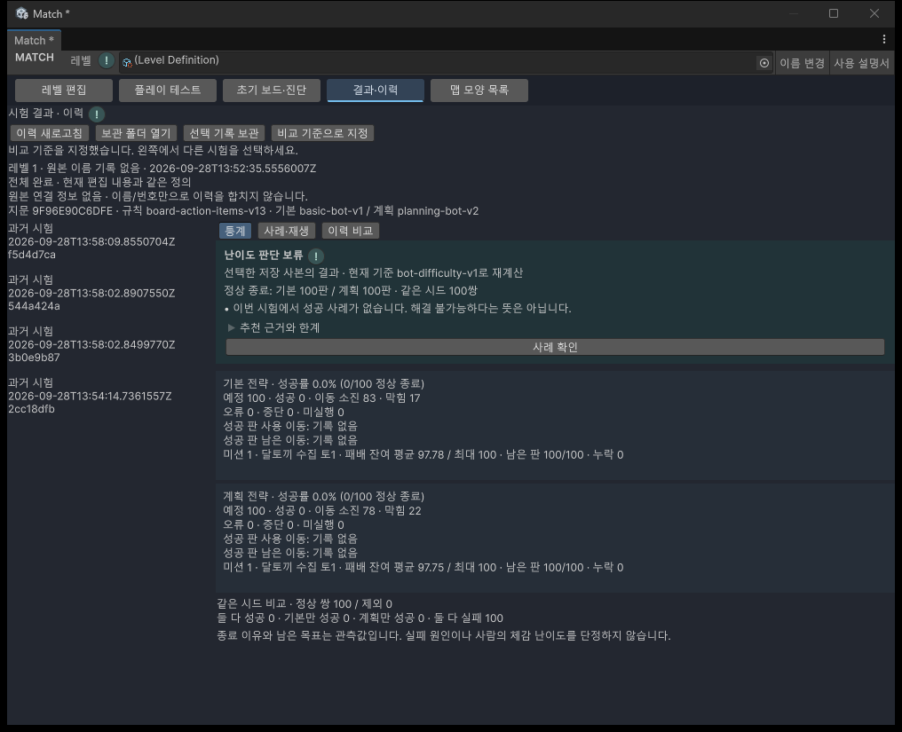

11 · 제작 참고값
예상 난이도
봇의 시험 결과를 제작 참고값으로 보여줍니다. 사람의 체감 난이도를 확정하는 점수는 아닙니다.
준비 기본·계획 전략을 각각 100판 이상 시험하고 결과·이력 → 통계에서 완료된 시험을 선택합니다.
난이도별 이동 횟수 찾기

추가 · 플레이 테스트 → 이동 횟수별 밸런스 시험을 펼치고 새 밸런스 시험을 누릅니다. 현재 편집 내용의 사본에서 이동 횟수만 1회부터 100회까지 바꾸어 실제 플레이합니다. 원본 레벨은 변경하지 않습니다.
- 레벨의 맵·장애물·미션을 먼저 구성합니다. 잘못된 배치가 있으면 시험 시작 안내에 따라 고칩니다.
- 새 밸런스 시험을 누릅니다. 기본·계획 봇이 이동 횟수마다 각각 100판, 전체 20,000판을 진행합니다.
- 진행 중 일시정지를 누르면 재개 또는 중지할 수 있습니다. 다른 탭으로 이동하면 일시정지하며, 돌아와도 자동 재개하지 않습니다.
- 쉬움 / 보통 / 어려움 / 매우 어려움의 추천 횟수를 확인합니다. 완료한 횟수만 중간 결과에 포함합니다.
- 원하는 난이도의 횟수를 선택하여 레벨 설정의 이동 횟수에 직접 입력하고 저장합니다.
| 이번 추천의 난이도 | 두 봇 중 높은 성공률 |
|---|---|
| 쉬움 | 60% 이상 |
| 보통 | 40% 이상, 60% 미만 |
| 어려움 | 20% 이상, 40% 미만 |
| 매우 어려움 | 0% 초과, 20% 미만 |
표시 예시는 쉬움: 30~32회 / 보통: 28~29회 / 어려움: 27회 / 매우 어려움: 26회입니다. 이 숫자는 설명용이며 실제 추천은 선택한 레벨의 시험 결과로 정합니다. 연속으로 확인한 횟수만 범위로 묶으며 중간에 다른 등급이 있으면 나누어 표시합니다.
횟수별 성공률과 판단 근거를 펼치면 각 횟수에서 두 봇이 몇 판 성공했는지 보입니다. 성공률 0%·오류·미완료에는 추천을 붙이지 않습니다. 전체 시험 후에도 해당 등급이 없으면 추천 없음, 아직 일부만 시험했다면 추가 시험 필요로 표시합니다. 모든 맵에서 네 등급이 반드시 나오는 것은 아닙니다.
한 시험 안에서는 모든 이동 횟수가 같은 시드 묶음을 사용합니다. 새 시험에서는 새 시드를 만들므로 결과가 달라질 수 있습니다. 봇은 기존처럼 공개된 정보만 보고 플레이하며 아이템·부스터를 사용하지 않습니다. 이는 제작용 봇 기준이며 사람의 체감 난이도와 같다는 뜻은 아닙니다.
결과 폴더에는 시작 조건, 횟수별 요약과 실제 판 기록을 보관합니다. 프로젝트의 Library/Match/MoveBalance 아래 저장되므로 Library를 지우기 전 필요한 결과를 복사해 두세요. 창 종료·재컴파일 후에는 완료한 횟수의 결과를 볼 수 있지만 진행 중 게임을 복원하지는 않습니다. 다시 시험할 때는 새 시험을 시작합니다. 원본 내용이 달라지면 다른 사본의 결과라는 안내가 표시됩니다.
추가 · 2026.09.29 기록 확인 저장 결과를 열면 실제 판 기록을 나누어 확인합니다. 확인 중에는 추천을 숨깁니다. 파일 누락·손상 또는 성공 수 불일치가 있으면 오류를 표시하며, 실행·평가 버전이 다르면 추천과 상세 등급을 표시하지 않습니다. 원본 기록은 바꾸지 않습니다.
추가 · 개발 중 오류 확인에는 작은 시험과 기존 기록을 사용합니다. 20,000판 전체 시험과 장시간 성능 확인은 별도 실제 검증에서 진행합니다. 현재 개발 검사 통과를 전체 시험 완료로 해석하지 마세요.
여러 레벨을 한 번에 시험하기
추가 · 2026.09.29. Match 통합 작업창 → 여러 레벨 시험 탭에서 미리 만든 레벨을 함께 시험합니다. 목록은 시작 순간의 내용을 복사하며, 원본 레벨의 이동 횟수는 자동으로 바꾸지 않습니다.

- 왼쪽 시험할 레벨 목록에서 Ctrl/Shift로 여러 레벨을 선택합니다. 전체 선택 또는 Project 선택 가져오기도 사용할 수 있습니다.
- 시험 방식을 정합니다. 현재 횟수 반복 시험은 레벨에 저장된 이동 횟수로 두 전략을 시험합니다. 전략별 판 수를 지정하며, 100판 미만이면 난이도 판단은 보류할 수 있습니다. 난이도별 이동 횟수 추천은 레벨마다 1~100회, 두 전략 각 100판씩 총 20,000판을 시험합니다.
- 선택 레벨 수와 총 예정 판 수를 확인하고 선택 레벨 시험 시작을 누릅니다. 한 레벨씩 순서대로 진행하며, 오류가 난 레벨은 오류를 남기고 다음 레벨로 넘어갑니다.
- 일시정지 후 재개하거나 중지할 수 있습니다. 다른 탭으로 이동하면 일시정지하고 돌아와도 자동 재개하지 않습니다. 실행 객체가 남아 있는 동안 다른 보드 시험은 시작할 수 없습니다.
- 오른쪽 레벨별 결과에서 하나를 선택합니다. 반복 시험은 현재 이동 횟수의 성공 수와 예상 난이도를, 추천 시험은 쉬움·보통·어려움·매우 어려움별 이동 횟수를 아래에 표시합니다. 실제 판 기록 확인이 끝난 뒤 표시합니다.
- 반복 결과의 판별 통계·사례 열기로 기존 결과·이력 화면을 엽니다. 저장 경로가 필요하면 결과 폴더를 누릅니다.
현재 실행 중인 레벨은 완료 또는 중지 후 결과를 확인합니다. 다른 레벨의 완료 결과는 선택해서 볼 수 있습니다. 추천 시험을 일부만 완료했으면 확인한 횟수만 표시하고 나머지 등급은 추가 시험 필요로 표시합니다. 원시 기록 오류나 버전 차이를 정상 추천으로 바꾸지 않습니다.
창을 닫거나 재컴파일하면 완료 기록을 보존하고 남은 실행을 중단합니다. 다시 열면 최근 실행 목록을 보여주며 자동 재개하지 않습니다. 새 시험은 새 시드와 별도 실행 폴더를 사용합니다. 기록은 Library/Match/MultiLevelTests에 보관되므로 Library 정리 전 필요한 결과 폴더를 복사하세요. 새 시험을 시작한 뒤의 화면은 최근 실행 목록이며 이전 실행 폴더는 보존됩니다.
등급 읽기

- 통계 위쪽의 예상 난이도와 대표 전략을 읽습니다.
- 추천 근거와 한계를 펼쳐 두 전략의 수치와 적용 기준을 확인합니다.
- 사례 확인을 눌러 실제 기록을 봅니다. 새 시험이나 자동 재생을 시작하지는 않습니다.
| 대표 성공률 | 난이도 |
|---|---|
| 60% 이상 | 쉬움 |
| 40% 이상, 60% 미만 | 보통 |
| 20% 이상, 40% 미만 | 어려움 |
| 0% 초과, 20% 미만 | 매우 어려움 |
두 전략 중 높은 성공률을 사용하고 동률이면 기본 전략을 표시합니다. 반올림 전 비율로 구간을 정하므로 59.99%는 보통입니다. 현재 기준 버전은 bot-difficulty-v2입니다. 이전: 매우 쉬움을 포함한 5단계 → 현재: 쉬움·보통·어려움·매우 어려움 4단계로 결과·이력과 이동 횟수 추천을 통일합니다.
항상 선택한 저장 사본을 현재 기준으로 다시 계산합니다. 과거에 이 등급이 저장되어 있었다는 뜻이 아닙니다. 현재 편집 내용이 달라졌다면 추천도 이전 레벨에 대한 결과입니다.
판단 보류

오류, 손상, 비호환 버전, 미완료·중단, 표본 부족은 등급을 매기지 않습니다. 화면의 이유를 확인한 뒤 오류를 고치거나 시험을 완료하세요.
양쪽 성공 0판도 매우 어려움이나 해결 불가능으로 단정하지 않습니다. 이번 시험에서 성공 사례를 찾지 못했다는 뜻입니다. 정상 종료가 없으면 성공률은 0%가 아니라 계산할 기록 없음입니다.
이동 수만 빠졌다면 등급을 계산할 수 있어도 이동 여유 태그는 보류할 수 있습니다. 오류·중단을 정상 패배에 포함하지 않습니다.
확인 범위와 변경 이력
작성일 2026.09.29 · Windows / Unity 6000.3.10f1. 합성 표본 계산 검사는 완료했으며 실제 UI와 대표 레벨 검증은 진행 중입니다. 실제 800판과 추천 UI 검사를 수행했습니다. 영향 회귀와 최종 완료 감사는 진행 중입니다. 영향 회귀와 20조건 증거 대조를 완료했습니다. 인간 체감 보정과 브라우저 배치는 미검증입니다.
| 변경일 | 변경 항목 | 이전 → 현재 | 이유 |
|---|---|---|---|
| 2026.09.29 | 여러 레벨 시험 | 추가 · 다중 선택, 두 시험 방식, 개별 결과와 추천, 순차 제어 | 저장 레벨 다수를 한 번에 시험하는 요청 |
| 2026.09.29 | 저장 결과 확인 | 추가 · 원시 기록 대조, 확인 중 추천 숨김, 손상·버전 불일치 안내 | 잘못된 기록을 정상 추천으로 표시하지 않음. 개발 검사는 소규모로 제한 |
| 2026.09.29 | 네 단계 통일 | 5단계 → 4단계. 60% 이상은 모두 쉬움 | 매우 쉬움 제외 요청 |
| 2026.09.29 | 이동 횟수별 밸런스 시험 | 추가 · 1~100회 실측과 4단계 추천 범위 | 제작자가 목표 난이도에 맞는 이동 횟수를 선택 |
| 2026.09.29 | 예상 난이도 확인 완료 | 추가 · 실제 800판·추천 UI·영향 회귀 완료 | 445개 검사 통과. 인간 체감·브라우저 배치는 미검증 |
| 2026.09.29 | 최초 안내 | 추가 · 등급, 보류, 태그와 현재 기준 재계산 안내. | 29단계 기능 추가 |